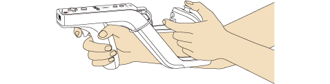
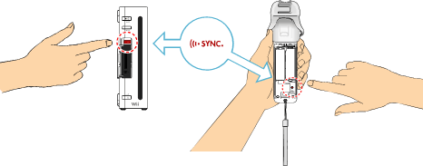

3 |
Utilisation de la manette Wii Remote |
 |
Pour jouer à ce jeu, utilisez la manette comme illustré ci-dessous. Note : Pour plus de détails sur la façon d'enfiler la dragonne et d'utiliser le protecteur de la manette Wii Remote, consultez le mode d'emploi de la Wii. 
Lorsque vous utilisez le Wii Zapper avec deux mains IMPORTANT : Enfilez toujours la dragonne lorsque vous utilisez la manette Wii Remote. Consultez la page 2 - Consignes d'utilisation. Note : Consultez toujours le manuel d'instructions de chacune des manettes que vous utilisez.
Cette procédure permet à la manette Wii Remote de communiquer avec la console Wii. La manette Wii Remote fournie avec la console Wii a déjà été synchronisée avec celle-ci. Il existe deux modes de synchronisation différents. MODE STANDARD - La procédure de synchronisation en mode standard sert à ajouter d'autres manettes Wii Remote à votre console Wii ou à effectuer une nouvelle synchronisation de votre manette Wii Remote. Une fois la manette Wii Remote synchronisée, vous pourrez éliminer ce paramétrage en effectuant une nouvelle synchronisation sur une autre console Wii. MODE TEMPORAIRE - Ce mode vous permet d'utiliser temporairement votre manette Wii Remote sur une autre console Wii et d'utiliser la manette Wii Remote d'un ami avec votre console Wii. Il n'efface pas le mode standard sauvegardé dans la manette Wii Remote. Dans ce mode, la manette Wii Remote communique avec la console Wii tant que celle-ci reste allumée. La synchronisation est perdue une fois que la console Wii est éteinte. Note : Seule une manette Wii Remote en mode standard peut allumer ou éteindre la console Wii. Synchronisation en mode standard Note : Assurez-vous que des piles sont insérées dans la manette Wii Remote.
À la fin de la synchronisation, le témoin allumé indique le nombre attribué au joueur.

Cette procédure doit être effectuée chaque fois que vous ajoutez une manette Wii Remote à votre console Wii. Synchronisation temporaire Note : Ce mode vous permet d'annuler temporairement la configuration en mode standard de toutes les manettes Wii Remote tant que la console Wii reste allumée. Une fois la console Wii rallumée, les manettes Wii Remote fonctionneront en mode standard.
IMPORTANT : Si votre manette Wii Remote perd la synchronisation avec la console Wii et que vous n'arrivez plus à les synchroniser, veuillez vous référer à la section En cas de problèmes concernant la manette Wii Remote du mode d'emploi de la Wii - Installation de l'appareil.
Si les boutons ou le levier du Nunchuk, d'une manette Classic Controller ou d'une manette Nintendo GameCube ne sont pas dans la position neutre* et ne fonctionnent pas normalement, suivez les étapes suivantes :
* La position neutre désigne la position d'un levier de contrôle ou d'un bouton quand celui-ci n'est pas incliné ou enfoncé. Si le levier de contrôle ou n'importe quel autre bouton n'est pas en position neutre lorsque vous allumez la console, cette position deviendra la nouvelle position neutre et le levier de contrôle ou le bouton ne fonctionnera pas de manière normale.
|


 |
 |
 |